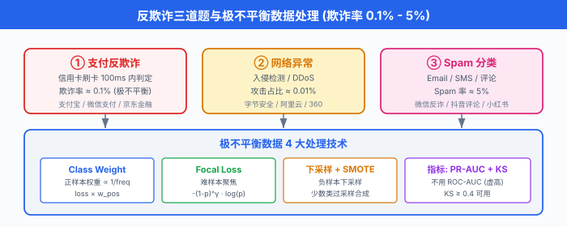
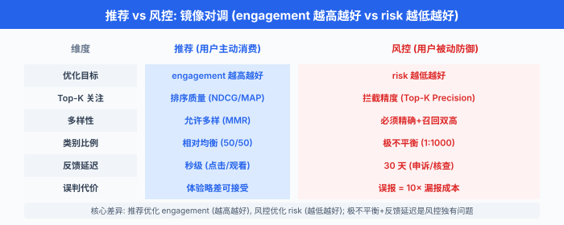

典型题深度演练 · 反欺诈/风控/异常检测¶
一句话总结：把 02 节的 8 步框架拆到 3 个反欺诈场景——信用卡交易反欺诈、网络异常检测、Spam 分类，每道 45 分钟时间盒 + 极不平衡数据处理 + 公式 + 中文圈真实案例 (微信/支付宝/字节/快手).
推荐/搜索/排序是"用户主动消费内容"的优化题，反欺诈/风控/异常检测是"用户被动遭遇风险"的防御题。 二者镜像对调：推荐优化 engagement (越高越好)，风控优化 risk (越低越好)；推荐关注 top-K 排序，风控关注 top-K 拦截；推荐允许多样性，风控必须精确+召回双高。 这一节讲 3 道"防御题"——信用卡欺诈 (支付场景)，网络异常 (基础设施), Spam (内容场景)，把极不平衡数据处理、延迟反馈、概念漂移这三个风控独有问题讲透.
0. 全章概览：3 道题的认知地图¶
反欺诈/风控/异常检测是中文圈 ML 面试的另一极——蚂蚁金服、微信支付、字节安全、京东金融、美团风控、快手反作弊，这些团队的算法岗 80% 都在问这三类问题。 拆开看，一共 3 类:
| 类型 | 原型 | 关键差异化 | 中文圈代表 |
|---|---|---|---|
| 支付反欺诈 | 信用卡反欺诈 (Carcillo 2018, SCARFF) | 极不平衡 (0.1%) + 反馈延迟 (30 天) + 图关联 (GNN) | 支付宝风控 / 微信支付 / 京东金融 |
| 网络异常 | 入侵检测 / DDoS (Liu 2008) | 时序异常 + 概念漂移 + 高维稀疏 | 字节安全 / 阿里云安全 / 360 |
| Spam 分类 | Email / SMS Spam (Cormack 2008) | 文本特征 + 用户行为 + 实时判定 | 微信反诈 / 抖音评论 / 小红书内容安全 |
这 3 道题的共同特征是极不平衡数据——欺诈率 0.1%、DDoS 攻击 0.01%、Spam 邮件 5%. 推荐题是 50/50 类别平衡，而风控题是 1:1000 的悬殊比例。 这是和推荐题最核心的方法论差异。


题 1：信用卡反欺诈 (支付场景)¶
1.1 题目陈述¶
"设计信用卡反欺诈系统. 用户在国外某商户刷卡，系统要在 100ms 内判定是否欺诈交易."
这是风控领域最经典的题目——Visa / Mastercard / 支付宝 / 微信支付每天都跑这套系统，全球每秒拦截上万笔欺诈交易。 题目看似简单 ("二分类问题")，实际涉及极不平衡 + 反馈延迟 + 设备关联 + 规则引擎四大难题。
1.2 45 分钟时间盒¶
| 时间 | Step | 必答内容 | 关键产出 |
|---|---|---|---|
| 0:00-0:05 | Clarify | 实时/离线判定？误报成本？反馈延迟？黑白名单规则？ | 需求清单 |
| 0:05-0:10 | Metrics | PR-AUC (不是 ROC-AUC) + KS + Top-K precision | 风控三层指标 |
| 0:10-0:15 | Data | 交易表 + 用户历史 + 设备/IP/地理 + 商户黑名单 | 数据流图 |
| 0:15-0:20 | Features | 交易行为画像 + 用户 30 天聚合 + 设备指纹 + 图特征 | 特征分类 |
| 0:20-0:28 | Model | 规则引擎 + GBDT + 图神经网络 (GNN) 三段式 | 完整架构图 |
| 0:28-0:33 | Training | 极不平衡处理: class weight + focal loss + 下采样 | 训练方案 |
| 0:33-0:40 | Deployment | 100ms 在线决策；离线批量复盘；人工审核低分交易 | 服务架构 |
| 0:40-0:45 | Monitor + 反问 | 反馈延迟对齐 + 概念漂移 (concept drift) + 误报成本；主动反问 "误报一例正常交易的代价是拦截一例欺诈的多少倍?" | 监控指标 + 追问预算 |
下面把 0:00-0:28 的内容详细展开——这是候选人翻车最多的 28 分钟。
1.3 Step 1 — Clarify (0:00-0:05)¶
满分话术 (向面试官确认):
"实时 vs 离线：用户在境外刷卡，系统 100ms 内必须返回 decision——是放行 (accept) / 拒绝 (decline) / 挑战 (challenge，短信验证码).
误报成本：误报一例正常交易 (false positive) 客户体验差，拒绝一例欺诈 (true positive) 直接止损。 误报代价 = 10 倍欺诈代价 是行业经验值。
反馈延迟：用户刷卡那一刻不知道是不是欺诈，要等 30 天后用户申诉或银行后台核查才能确定。 训练数据永远比现实慢 30 天——这是风控的核心难题。
规则引擎：行业 70%+ 拦截来自规则引擎 (例如"凌晨 3 点海外大额 + 新设备"直接拒绝)，模型只是补充。
冷启动：新用户没有 30 天历史，走规则 + 设备指纹相似度；新商户没有历史欺诈率，走人工审核 + 限额."
❌ 常见卡顿点："我用逻辑回归二分类"——没说清 100ms 延迟约束、反馈延迟、误报代价。 ✅ 解套：强制套 5 个问题 (实时性/误报成本/反馈延迟/规则 vs 模型/冷启动). 即使面试官说"自己假设"，也要嘴上说出来.
1.4 Step 2 — Metrics (0:05-0:10) ★ 风控必答¶
1.4.1 为什么不用 ROC-AUC，而用 PR-AUC?¶
ROC-AUC 在极不平衡数据下会严重虚高——即使模型对所有样本都预测"正常", ROC-AUC 也能到 0.9 以上。 因为 ROC 的横轴 FPR 用的是全部负样本，而负样本太多，模型预测的微小差异就被平均掉了。
PR-AUC (Precision-Recall 曲线下面积) 用正样本做分母，对极不平衡数据敏感得多. 风控领域事实标准。
PR-AUC 的数学定义：把样本按模型分数从高到低排序，逐个计算 (Precision, Recall) 点，画曲线。 数值上等价于:
其中 \(R_n\) 是第 \(n\) 个阈值后的召回率，\(P_n\) 是对应的精确率。 等价于 PR 曲线下的面积 (用梯形法积分).
1.4.2 KS 统计量 (Kolmogorov-Smirnov statistic)¶
KS 是风控第二常用指标，表示好坏样本累计分布的最大差值:
其中 \(F_1(t)\) 是正样本 (欺诈) 分数累积分布，\(F_0(t)\) 是负样本 (正常) 分数累积分布。 KS 越大，模型区分度越好。 行业经验：KS ≥ 0.4 可用，KS ≥ 0.5 优秀。
面试官追问: "KS 和 PR-AUC 有什么区别?"
✅ 答：KS 反映整体区分度，是一个数；PR-AUC 反映整体排序质量，是一个面积。 两者正相关但不等价。 实际项目里两个都要报，离线 KS 0.45 / PR-AUC 0.35 是常见水平。
1.4.3 Top-K Precision (拦截量视角)¶
业务侧更关心"系统每天拦截的 100 笔交易里，多少是真欺诈"——这就是 Top-K Precision (也叫 Recall@K, Hit Rate@K). 假设系统每天拦截 Top-1000 高分交易，其中 800 真欺诈，200 误报，Top-1000 precision = 0.8.
1.4.4 误报代价 + 业务指标¶
# 反欺诈系统: 业务指标 = 拦截率 × 欺诈金额 - 误报率 × 客户流失
business_loss = (
intercept_rate * fraud_amount_usd # 拦截到的欺诈挽回
- false_positive_rate * customer_lifetime_usd # 误报流失的客户价值
- challenge_rate * verification_cost_usd # 挑战 (短信验证) 的人力成本
)
灵魂拷问: "1000 笔交易，1 笔欺诈，模型 100% 准确 vs 99.9% 准确，哪个更值钱?"
✅ 答：1 笔欺诈挽回 1000 元，1 笔误报流失客户价值 5000 元。 模型 100% 准确时业务损失 = -1000 元；模型 99.9% 准确时业务损失 = -1000 元 + 0.001 × 5000 元 × 1000 = +4000 元 (亏了!). 这说明误报成本远大于漏报成本——这是反欺诈的核心 trade-off.
1.5 Step 3-4 — 数据 + 特征 (0:10-0:20)¶
1.5.1 数据源¶
fraud_data_sources = {
# 交易表 (核心)
"transactions": ["txn_id", "user_id", "merchant_id", "amount",
"timestamp", "country", "currency", "card_bin"],
# 用户历史 (画像)
"user_history": ["30天消费总额", "消费类目分布", "常用国家/商户",
"常用设备/IP", "近 7 天交易笔数"],
# 设备指纹 (device fingerprint, 浏览器+硬件指纹)
"device_fingerprint": ["device_id", "os", "browser", "screen",
"timezone", "language", "fingerprint_hash"],
# IP 地理与代理
"ip_geo": ["ip", "country", "city", "is_vpn", "is_proxy", "is_tor"],
# 商户黑名单
"merchant_blacklist": ["merchant_id", "fraud_rate", "industry"],
# 行为日志
"behavior_logs": ["登录时间分布", "页面停留", "点击模式"],
}
1.5.2 特征工程 (风控核心)¶
风控的特征比推荐更手工化——欺诈模式有规律，业务专家的规则转化率极高。
A. 交易行为画像 (30 天聚合)
# 用户 30 天交易特征 (Spark 离线聚合)
user_features_30d = {
"txn_count_30d": "交易笔数",
"txn_amount_sum_30d": "交易总额",
"txn_amount_avg_30d": "平均交易金额",
"txn_country_count_30d": "涉及国家数 (用户常驻 1-3 个, 突增 = 危险)",
"txn_hour_entropy": "交易时间分布熵 (夜间多 = 风险高)",
"txn_max_amount_30d": "最大单笔金额",
"amount_zscore": "本次金额 vs 用户均值的 Z-score",
"country_distance": "本次国家 vs 用户常住国距离 (km)",
"merchant_new_flag": "是否首次在该商户消费",
}
B. 设备指纹特征
设备指纹 (device fingerprint) 是通过浏览器/APP 收集的硬件 + 软件指纹组合，用于唯一标识一台设备，即使 IP 换了也能识别同一台机器。 关键特征:
device_features = {
"device_user_count": "该设备绑定的用户数 (> 3 个 = 异常, 黑产多账号)",
"device_fraud_count_30d": "该设备 30 天内欺诈次数 (命中黑名单)",
"device_age_days": "设备首次出现距今天数",
"is_emulator": "是否模拟器 (root/越狱)",
"fingerprint_match": "本次设备 vs 用户历史设备的指纹相似度",
"ip_change_freq_24h": "24 小时内 IP 变更次数 (代理/VPN 特征)",
}
C. 图特征 (GNN 关键)
欺诈是团伙行为——黑产有 100 个账号共用 10 台设备 + 5 个 IP，单独看每笔交易看不出问题，但图结构能识别。 我们建三类图:
图节点: 用户 (user) / 设备 (device) / IP / 商户 (merchant)
图边: (user, device) 登录关系
(user, ip) 访问关系
(user, merchant) 交易关系
(device, ip) 同一会话
D. Velocity 特征 (滑动窗口频次)
# Velocity: 滑窗计数 (Flink 实时算)
velocity_features = {
"txn_count_1h": "过去 1 小时交易笔数",
"txn_count_24h": "过去 24 小时交易笔数",
"amount_sum_1h": "过去 1 小时交易金额",
"failed_login_24h": "过去 24 小时登录失败次数",
"card_bin_count_24h": "过去 24 小时使用过的卡 bin 数 (换卡 = 危险)",
}
1.6 Step 5 — Model (0:20-0:28) ★ 本节核心¶
1.6.1 整体架构：规则 + GBDT + GNN 三段式¶
信用卡反欺诈 三段式架构
┌──────────────────────────────────────────────────────────┐
│ │
│ 规则引擎 (拦截 70%) GBDT 精排 (拦截 25%) GNN 关联 (拦截 5%) │
│ ────────── ────────────── ───────────── │
│ ① 黑白名单 ① XGBoost / LightGBM ① GraphSAGE │
│ ② 阈值规则 ② 100+ 特征 ② 节点 embedding │
│ ③ Velocity 触发 ③ Focal Loss ③ 团伙欺诈识别 │
│ ④ 设备指纹异常 ④ class weight ④ (兜底) 关联风险 │
│ │
│ 在线延迟: 规则 5ms, GBDT 30ms, GNN 50ms = 85ms < 100ms │
└──────────────────────────────────────────────────────────┘
关键认知: 规则引擎不是"low-tech"——Visa / Mastercard / 支付宝真实生产系统 70% 拦截来自规则. 模型 (GBDT/GNN) 是补充，处理"规则写不出来"的复杂模式。 面试时如果只答模型不答规则，直接挂.
1.6.2 规则引擎：风控的护城河¶
# 规则引擎 (伪代码: Drools / Easy Rules)
rules = [
Rule("R001", "黑卡直接拒绝",
condition=lambda txn: txn.card_bin in blacklist_cards,
action="decline"),
Rule("R002", "凌晨 + 海外 + 大额",
condition=lambda txn: (0 <= txn.hour <= 5 and
txn.country != txn.user_home_country and
txn.amount > 1000),
action="challenge"), # 短信验证
Rule("R003", "10 分钟内 ≥ 3 笔不同商户",
condition=lambda txn: txn.velocity_count_10min >= 3,
action="challenge"),
Rule("R004", "设备 24h 内 ≥ 5 个用户",
condition=lambda txn: txn.device_user_count_24h >= 5,
action="decline"),
Rule("R005", "首次使用 + 异地 + 大额",
condition=lambda txn: (txn.user_age_days < 30 and
txn.country != txn.user_home_country and
txn.amount > 500),
action="manual_review"),
]
# 规则优先级 + 短路: 一旦命中 R001 / R003 / R004, 直接 decline
1.6.3 GBDT 精排：XGBoost / LightGBM + 极不平衡处理¶
# 信用卡反欺诈 GBDT 模型 (PyTorch + LightGBM)
import lightgbm as lgb
import numpy as np
class FraudGBDT:
"""LightGBM 二分类 + 极不平衡处理."""
def __init__(self, pos_weight=99):
# 欺诈率 0.1% → 负正比 999:1 → pos_weight = 999
self.params = {
"objective": "binary",
"metric": "auc",
"learning_rate": 0.05,
"num_leaves": 63,
"max_depth": 7,
"feature_fraction": 0.8,
"bagging_fraction": 0.8,
"bagging_freq": 5,
"min_child_samples": 100,
"scale_pos_weight": pos_weight, # 关键: 极不平衡加权
"verbose": -1,
}
def focal_loss_objective(self, y_pred, dataset):
"""Focal Loss: 让难样本 (误判的欺诈) 权重更高."""
y_true = dataset.get_label()
gamma = 2.0
alpha = 0.25
# Sigmoid
p = 1 / (1 + np.exp(-y_pred))
# Focal loss 梯度
grad = alpha * (1 - p) ** gamma * (
y_true * (gamma * p * np.log(p + 1e-8) + p - 1) +
(1 - y_true) * (gamma * (1 - p) * np.log(1 - p + 1e-8) + p)
)
hess = alpha * (1 - p) ** gamma * p * (1 - p)
return grad, hess
def train(self, X_train, y_train, X_val, y_val):
train_data = lgb.Dataset(X_train, label=y_train)
val_data = lgb.Dataset(X_val, label=y_val, reference=train_data)
self.model = lgb.train(
self.params,
train_data,
num_boost_round=500,
valid_sets=[val_data],
callbacks=[lgb.early_stopping(20), lgb.log_evaluation(50)],
)
return self
def predict_proba(self, X):
return self.model.predict(X)
# ============ 极不平衡数据处理 4 套方案 ============
# 1. Class Weight (最简单, 必答)
# 欺诈率 0.1% → scale_pos_weight = 999, 让正样本在 loss 中权重放大 999 倍
# 2. 下采样 (Downsample) — 只采部分负样本, 让训练集接近平衡
def downsample_majority(X, y, neg_ratio=10):
"""随机下采样负样本, 保持负正比 10:1 (训练时)."""
pos_idx = np.where(y == 1)[0]
neg_idx = np.where(y == 0)[0]
n_pos = len(pos_idx)
neg_keep = np.random.choice(neg_idx, n_pos * neg_ratio, replace=False)
keep = np.concatenate([pos_idx, neg_keep])
return X[keep], y[keep]
# 3. SMOTE (Synthetic Minority Over-sampling Technique) — 合成新正样本
# 思路: 对每个正样本, 在 k 个最近邻中随机选一个, 在连线上插值生成新样本
# 适用: 特征空间连续; 注意: 欺诈是高维稀疏数据, SMOTE 容易过拟合
# 4. Focal Loss (Lin 2017) — 让难样本权重更高
# 关键思想: 易分样本 (高 p) 的权重被 (1-p)^γ 衰减, 难样本保留
# 公式: L = -α (1-p)^γ y log(p) - (1-α) p^γ (1-y) log(1-p)
# γ = 2 常用; α = 0.25 处理正负比例
1.6.4 图神经网络：识别团伙欺诈¶
图神经网络 (Graph Neural Network, GNN) 是 Ch12 引入过的方法，在反欺诈中用于捕捉团伙关联——单独看每笔交易，一个欺诈用户可能完全正常；但 GNN 把用户/设备/IP 关联起来，黑产团伙整片整片地浮出水面。
消息传递 (message passing) 是 GNN 的核心机制。 每个节点 \(v\) 聚合邻居 \(\mathcal{N}(v)\) 的特征，更新自己的表示:
具体到欺诈场景:
# 信用卡反欺诈: GraphSAGE 节点分类 (PyTorch Geometric)
import torch
import torch.nn as nn
from torch_geometric.nn import SAGEConv
class FraudGNN(nn.Module):
"""欺诈团伙识别 GNN: 节点 = 用户/设备/IP, 边 = 关联关系."""
def __init__(self, in_dim, hidden=128, out_dim=64):
super().__init__()
# 两层 GraphSAGE: 1-hop + 2-hop 邻居聚合
self.conv1 = SAGEConv(in_dim, hidden, aggr="mean")
self.conv2 = SAGEConv(hidden, out_dim, aggr="mean")
# 节点分类头
self.classifier = nn.Linear(out_dim, 1)
def forward(self, x, edge_index):
# 1-hop 邻居聚合
h = self.conv1(x, edge_index)
h = torch.relu(h)
h = torch.dropout(h, p=0.3, train=self.training)
# 2-hop 邻居聚合
h = self.conv2(h, edge_index)
# 节点分类: 该用户是不是欺诈高风险?
logits = self.classifier(h)
return logits, h
# 训练: 节点标签 = 用户是否参与过欺诈团伙
# 负采样: 随机负样本 (单点欺诈) vs 团伙欺诈 (GNN 优势)
# 在线推理: 把当前交易用户 + 其 2-hop 邻居取出, 跑 GNN 一次 (~50ms)
GNN 的优势: - 黑产 100 个账号共用 10 个设备 + 5 个 IP → GNN 在这 100 个节点的 embedding 上聚类，整片标红 - 单点欺诈 (用户被盗刷) 不会传播到邻居 → GNN 分数低 - 这正是单点模型 (GBDT) 看不到的"团伙性"
1.6.5 在线服务架构¶
在线反欺诈系统 100ms 延迟预算
┌────────────────────────────────────────────────────────┐
│ │
│ T+0ms T+5ms T+40ms T+90ms T+100ms │
│ │ │ │ │ │ │
│ ▼ ▼ ▼ ▼ ▼ │
│ 接交易 规则引擎 GBDT 精排 GNN 团伙 返回 │
│ 请求 (同步) (同步, 30ms) (异步, 50ms) │
│ decline decline/challenge/accept │
│ │
│ 注: GNN 异步是预计算 — 用户 embedding 离线预算, │
│ 在线只跑一次 forward. │
└────────────────────────────────────────────────────────┘
1.7 Step 6-8 — 训练 + 部署 + 监控 (0:28-0:45)¶
| Step | 反欺诈强相关 | 数字 / 工具 |
|---|---|---|
| Training | 极不平衡: scale_pos_weight=999 + Focal Loss + 下采样 10:1 | LightGBM + class weight；不下采样也行，但要小学习率 + 早停 |
| Deployment | 100ms 在线决策；离线 Spark 跑全量；人工审核低分 (50-70 分) | Flink 实时特征 + Triton 模型服务 |
| Monitor | 反馈延迟对齐 (30 天回填 label)；概念漂移 PSI；误报成本 | Prometheus + Grafana + ELK |
| 反馈回路 | 误报 → 用户投诉 → 人工修正 → 重训 (T+30d 才能拿到新 label) | 反向：客服标记"非欺诈" |
1.7.1 概念漂移 (concept drift) 检测¶
欺诈模式每 3 个月变一次——黑产换设备、换 IP、换手法。 模型上线 3 个月后效果下降 30% 是常态。
PSI (Population Stability Index，群体稳定性指标) 是风控漂移检测的事实标准:
# PSI 漂移检测 (scipy 实现)
import numpy as np
def compute_psi(expected, actual, bins=10):
"""PSI: 群体稳定性指标. PSI < 0.1 稳定, 0.1-0.25 漂移, > 0.25 严重漂移.
expected: 训练时分布
actual: 当前线上分布
bins: 等频分箱
"""
# 1. 用训练集分箱边界分箱线上分布
breakpoints = np.quantile(expected, np.linspace(0, 1, bins + 1))
breakpoints[0] = -np.inf
breakpoints[-1] = np.inf
expected_counts = np.histogram(expected, breakpoints)[0] / len(expected)
actual_counts = np.histogram(actual, breakpoints)[0] / len(actual)
# 2. PSI 公式
psi = np.sum(
(actual_counts - expected_counts) * np.log(
(actual_counts + 1e-6) / (expected_counts + 1e-6)
)
)
return psi
# 每日监控: PSI > 0.25 触发告警 → 模型自动重训
1.8 支付宝/微信支付的实战 (中文圈案例)¶
1.8.1 支付宝"蚁盾"风控体系¶
支付宝 (蚂蚁金服) 的风控体系 CTU (业界常见展开有 "Cognitive Trust Unit" / "Customer Trust Unit" / "Continuous Transaction Update" 等，蚂蚁公开材料措辞不完全一致，此处以决策引擎语义使用) 是中文圈最复杂的风控系统之一，公开技术分享中可见如下分层结构:
- 5 层防御：设备指纹 → 行为画像 → 交易规则 → 风险模型 → 人工审核
- 决策时间：风险决策 < 100ms，复杂交易 (异地大额) 走人工审核 < 30 分钟
- 误报控制：通过短信验证 / 指纹 / 人脸挑战，把误报损失压到极低量级 (具体数字以官方口径为准)
- 实时模型：高频更新模型权重，结合 FTRL 等在线学习方案
1.8.2 微信支付的"微信支付分 + 实时风控"¶
微信支付的风控依赖微信支付分 (类似芝麻信用) + 实时行为分析:
- 支付分：用户信用画像，高分用户走"免密" (信任)，低分用户走"验证码" (挑战)
- 实时风控：每次支付请求同时送入 GBDT 模型 + 设备指纹校验
- 欺诈识别率：微信支付在公开宣传材料中长期强调"高召回 + 低误报"两项指标，具体数字以官方年度报告为准
1.8.3 京东金融 / 美团金融¶
京东金融 / 美团金融的反欺诈特点是"小而精"——交易量比支付宝小，但反欺诈模型更激进:
- 小模型优先：单笔决策 < 30ms，模型大小 < 10MB，部署到端上 (APP 内)
- 黑白名单 + 规则占 80%：模型只处理长尾
- 人工审核重：低分交易直接进人工队列，客服 5 分钟内联系用户
1.9 学员常见卡顿点 + 解套¶
| 卡顿点 | 解套 |
|---|---|
| 一上来就说"用 GBDT 二分类" | 强调规则引擎拦截 70% + 极不平衡 + 反馈延迟，模型只是补充 |
| 不会处理极不平衡 | Class weight (最简单) + 下采样 (训练) + Focal Loss (难样本加权) + SMOTE (慎用，高维稀疏易过拟合) |
| 不提规则引擎 | 70% 拦截来自规则，Visa/Mastercard/支付宝公开承认，不答规则 = 必挂 |
| 不提图关联 | 黑产是团伙行为，GNN 能识别"100 个账号共用 10 个设备"——这是 GBDT 看不到的 |
| 不提反馈延迟 | 用户刷卡 → 30 天后才知道是不是欺诈 → 训练数据永远落后；这决定了业务指标不能用即时信号，要用 30 天回填 |
| 不会用 PR-AUC | ROC-AUC 在极不平衡下虚高，风控事实标准是 PR-AUC + KS + Top-K Precision |
| 不会算误报成本 | 误报代价 10 倍欺诈代价，业务指标是"拦截金额 - 误报损失" |
| 不提概念漂移 | PSI 监控 + 自动重训；欺诈模式每 3 月变一次 |
1.10 关键追问 cheat sheet¶
| Step | 高频追问 | 标准答案 |
|---|---|---|
| 1 | 为什么不用 ROC-AUC? | 极不平衡下虚高；PR-AUC + KS 是风控事实标准 |
| 2 | 极不平衡怎么处理？ | Class weight + 下采样 + Focal Loss + SMOTE |
| 3 | 规则 vs 模型占比？ | 70% 规则 + 25% 模型 + 5% GNN; Visa/支付宝公开承认 |
| 4 | 反馈延迟怎么办？ | 30 天回填 label；离线 + 在线双轨；监控用近期数据 |
| 5 | 设备指纹怎么算？ | 浏览器+硬件指纹 hash，即使 IP 换也能识别 |
| 6 | GNN 在反欺诈有什么用？ | 团伙识别，100 个账号共用设备/ IP 整片标红 |
| 7 | 误报 vs 漏报 trade-off? | 误报代价 10 倍漏报，业务指标优化"拦截金额 - 误报损失" |
| 8 | 概念漂移怎么监控？ | PSI > 0.25 告警 + KS 检验每日 + 自动重训 |
| 综合 | 蚂蚁金服怎么做的？ | CTU 5 层防御 + 决策 < 100ms + 实时模型 5 分钟更新 |
| 综合 | 微信支付分是什么？ | 信用画像 + 高分免密 / 低分挑战；以"高召回 + 低误报"双高为目标 |
题 2：网络异常检测 (基础设施)¶
2.1 题目陈述¶
"设计网络异常检测系统. 阿里云 / 字节安全 / 360 视角：监测入站流量、用户登录、API 调用，自动识别 DDoS 攻击、撞库、爬虫."
这道题和反欺诈题看似都是"找异常"，但数据形态和决策时间完全不同: - 反欺诈：业务层 (交易), 100ms 决策，反馈延迟 30 天 - 网络异常：基础设施层 (流量/日志)，实时流式，反馈快 (秒级)
2.2 网络异常 vs 反欺诈：关键差异¶
| 维度 | 反欺诈 | 网络异常 |
|---|---|---|
| 对象 | 业务事件 (交易) | 基础设施事件 (流量/登录/请求) |
| 正样本率 | 0.1% (欺诈) | 0.01% (攻击) |
| 决策时间 | 100ms | 1-5s (可以慢一点) |
| 反馈延迟 | 30 天 (申诉周期) | 秒-分钟 (攻击立即可见) |
| 核心模型 | GBDT + GNN + 规则 | 统计 + Isolation Forest + AutoEncoder |
| 业务目标 | 拦截欺诈挽回金额 | 阻断攻击保护可用性 |
| 误报代价 | 用户流失 (业务) | 服务降级 (技术) |
核心差异：反欺诈是业务赚钱问题 (亏钱)；网络异常是基础设施问题 (宕机). 决策时间反欺诈更紧，反馈网络异常更快.
2.3 三类网络异常¶
2.3.1 时序异常：流量突变 / DDoS¶
# 流量时序异常
time_series_anomaly = {
"对象": "API 网关入站流量 (req/s), 出口带宽 (Mbps)",
"特征": "突增 / 突降 / 周期性异常 / 季节性偏移",
"案例": "DDoS 攻击 (10 倍流量突增), 出口被刷, API 雪崩",
"方法": "统计 (Z-score, MAD) + STL 分解 + Isolation Forest",
}
核心公式: STL (Seasonal-Trend-Loess) 把时间序列分解为:
- \(T_t\)：趋势分量
- \(S_t\)：季节分量 (周期)
- \(R_t\)：残差 (异常)
异常 = \(R_t\) 超过阈值 (例如 \(\pm 3\sigma\)).
2.3.2 主机入侵：Log Anomaly¶
# 主机日志异常 (登录 / sudo / 文件访问)
log_anomaly = {
"对象": "Linux auth.log, sudo, /var/log/secure, syslog",
"特征": "失败登录次数, 新增 sudo 规则, 异常文件访问, 进程 spawn",
"案例": "暴力破解, 提权 (privilege escalation), webshell 上传",
"方法": "规则 + 序列模型 (LSTM) + 日志聚类 (Drain)",
}
2.3.3 用户行为异常：撞库 / 爬虫¶
撞库 (credential stuffing) 是黑产用泄露的用户名密码组合 (从其他网站流出的)，在目标网站批量尝试登录。 检测信号:
credential_stuffing_signals = {
"失败率飙升": "单 IP 失败率 > 80% (正常 < 5%)",
"UA 单一": "同一 IP 用同一浏览器指纹 (黑产脚本)",
"请求频次": "单 IP > 100 req/min (正常 < 10)",
"账号聚集": "同一批账号集中在短时间被尝试",
"密码 hash 重用": "相同 hash 出现在多个账号 (黑产库特征)",
}
2.4 45 分钟时间盒¶
| 时间 | Step | 必答内容 |
|---|---|---|
| 0:00-0:05 | Clarify | 流量/日志/行为 哪一类？实时/离线？误报成本？ |
| 0:05-0:10 | Metrics | 召回率 + 误报率 + MTTD (平均检测时间) + MTTR (平均响应时间) |
| 0:10-0:15 | Data | 时序指标 / 日志 / 行为日志 |
| 0:15-0:20 | Features | 时序特征 + 行为画像 + 序列特征 |
| 0:20-0:28 | Model | 统计 + Isolation Forest + AutoEncoder 三段式 |
| 0:28-0:33 | Training | 无监督为主，反馈快 (分钟级) |
| 0:33-0:40 | Deployment | 流式 (Flink) + 离线复盘 |
| 0:40-0:45 | Monitor | 概念漂移 + 告警疲劳 + 误报追踪 |
2.5 Step 5 — Model (0:20-0:28) ★ 本节核心¶
2.5.1 整体架构¶
网络异常检测 三段式架构
┌──────────────────────────────────────────────────────────┐
│ │
│ 统计规则 (拦截 60%) Isolation Forest (拦截 25%) AutoEncoder (拦截 15%) │
│ ────────── ────────────── ──────────── │
│ ① Z-score / MAD ① 随机切分 ① 重建误差 │
│ ② STL 分解 ② 路径长度 ② 阈值告警 │
│ ③ 失败率阈值 ③ 异常分数 ③ 序列模型 │
│ ④ 速率限制 │
│ │
│ 在线延迟: 规则 1ms, IF 5ms, AE 10ms = 16ms │
└──────────────────────────────────────────────────────────┘
2.5.2 Isolation Forest：随机切分找异常¶
Isolation Forest 是刘飞 (Liu, Ting, Zhou 2008) 提出的无监督异常检测算法，核心思想：异常点容易被孤立. 正常点需要很多次切分才能隔开，异常点几下就能孤立。
路径长度 (path length) 是关键：从根到叶，节点被孤立所需的边数。
异常分数:
其中 \(E[h(x)]\) 是 \(x\) 在多棵树上的平均路径长度，\(c(n)\) 是 \(n\) 个样本的 BST 平均路径长度:
其中 \(H(i) = \ln(i) + \gamma\) (欧拉常数 \(\gamma \approx 0.5772\)).
- \(s \to 1\)：异常
- \(s < 0.5\)：正常
- \(s \approx 0.5\)：整片数据
简易 Python 实现:
# Isolation Forest 简易实现 (教学版)
import numpy as np
class IsolationTree:
"""单棵 iTree."""
def __init__(self, height, current_height=0):
self.height = height
self.current_height = current_height
self.split_feature = None
self.split_value = None
self.left = None
self.right = None
self.is_leaf = False
self.size = 0
def fit(self, X):
"""递归切分直到叶节点或达到 max_depth."""
self.size = len(X)
if self.current_height >= self.height or len(X) <= 1:
self.is_leaf = True
return
# 随机选一个特征 + 切分点
self.split_feature = np.random.randint(X.shape[1])
min_v, max_v = X[:, self.split_feature].min(), X[:, self.split_feature].max()
if min_v == max_v:
self.is_leaf = True
return
self.split_value = np.random.uniform(min_v, max_v)
# 切分
left_mask = X[:, self.split_feature] < self.split_value
self.left = IsolationTree(self.height, self.current_height + 1)
self.left.fit(X[left_mask])
self.right = IsolationTree(self.height, self.current_height + 1)
self.right.fit(X[~left_mask])
def path_length(self, x):
"""样本 x 在这棵树的路径长度."""
if self.is_leaf:
# c(size) 修正: 叶子未切完
return self.current_height + c_factor(self.size)
if x[self.split_feature] < self.split_value:
return self.left.path_length(x)
return self.right.path_length(x)
def c_factor(n):
"""BST 平均路径长度修正项."""
if n <= 1:
return 0
return 2.0 * (np.log(n - 1) + 0.5772156649) - 2.0 * (n - 1) / n
class IsolationForest:
"""Isolation Forest 集成."""
def __init__(self, n_trees=100, max_depth=10, subsample_size=256):
self.n_trees = n_trees
self.max_depth = max_depth
self.subsample_size = subsample_size
self.trees = []
def fit(self, X):
self.trees = []
for _ in range(self.n_trees):
# 子采样: 只取 256 个样本, 加快训练
idx = np.random.choice(len(X), self.subsample_size, replace=False)
tree = IsolationTree(self.max_depth)
tree.fit(X[idx])
self.trees.append(tree)
def anomaly_score(self, X):
"""异常分数: 2^(-E[h(x)]/c(n))."""
n = self.subsample_size
c = c_factor(n)
scores = np.zeros(len(X))
for i, x in enumerate(X):
path_lengths = [tree.path_length(x) for tree in self.trees]
avg_path = np.mean(path_lengths)
scores[i] = 2 ** (-avg_path / c)
return scores
# 用法
iforest = IsolationForest(n_trees=100)
iforest.fit(X_normal) # 只用正常流量训练
scores = iforest.anomaly_score(X_test)
# scores > 0.7 视为异常 → 触发告警
2.5.3 AutoEncoder：重建误差检测异常¶
AutoEncoder (自编码器) 是无监督异常检测的另一种思路：训练只重建正常样本，异常样本重建误差高.
重建误差 (reconstruction error):
其中 \(\hat{x} = \text{Decoder}(\text{Encoder}(x))\).
# AutoEncoder 异常检测 (PyTorch)
import torch
import torch.nn as nn
class AnomalyAutoEncoder(nn.Module):
"""异常检测 AutoEncoder: 只在正常流量上训练."""
def __init__(self, input_dim, hidden_dims=[64, 32, 16]):
super().__init__()
# Encoder: input_dim → 64 → 32 → 16
encoder_layers = []
prev = input_dim
for h in hidden_dims:
encoder_layers.extend([
nn.Linear(prev, h),
nn.ReLU(),
nn.BatchNorm1d(h),
])
prev = h
self.encoder = nn.Sequential(*encoder_layers)
# Decoder: 16 → 32 → 64 → input_dim
decoder_layers = []
prev = hidden_dims[-1]
for h in reversed(hidden_dims[:-1]):
decoder_layers.extend([
nn.Linear(prev, h),
nn.ReLU(),
nn.BatchNorm1d(h),
])
prev = h
decoder_layers.append(nn.Linear(prev, input_dim))
self.decoder = nn.Sequential(*decoder_layers)
def forward(self, x):
z = self.encoder(x) # 压缩到潜空间
x_hat = self.decoder(z) # 重建
return x_hat
def anomaly_score(self, x):
"""重建误差: 越大越异常."""
with torch.no_grad():
x_hat = self.forward(x)
# MSE 重建误差
return ((x - x_hat) ** 2).mean(dim=-1)
# 训练: 只在正常流量 (历史 30 天) 上训练
model = AnomalyAutoEncoder(input_dim=64)
optimizer = torch.optim.Adam(model.parameters(), lr=1e-3)
criterion = nn.MSELoss()
for epoch in range(50):
for x_normal in normal_dataloader:
x_hat = model(x_normal)
loss = criterion(x_hat, x_normal)
optimizer.zero_grad()
loss.backward()
optimizer.step()
# 在线推理: 重建误差 > 阈值 → 告警
# 阈值: 用验证集 (已知有攻击) 的 P99 重建误差
2.5.4 时序异常 + 突变检测¶
# 时序突变检测 (DDoS 防御)
class DDoSDetector:
"""DDoS 流量突变检测: Z-score + STL 残差."""
def __init__(self, window=60, z_threshold=4.0):
self.window = window # 60 秒滑窗
self.z_threshold = z_threshold
def detect(self, traffic_series):
"""traffic_series: 每秒请求数."""
# 1. 滚动均值 + 标准差
rolling_mean = traffic_series.rolling(self.window).mean()
rolling_std = traffic_series.rolling(self.window).std()
# 2. Z-score: 当前值偏离几个 σ?
z_scores = (traffic_series - rolling_mean) / (rolling_std + 1e-6)
# 3. 突变 = Z-score > 阈值
anomalies = (z_scores.abs() > self.z_threshold)
return anomalies, z_scores
def detect_ddos(self, traffic_series):
"""DDoS 特征: 流量 10 倍突增 + 持续 60s + 来源 IP 集中."""
anomalies, _ = self.detect(traffic_series)
# 加上"来源 IP 集中度" 特征
# entroy < 3 → 攻击 (正常 entropy > 6)
# 综合判定: 流量突增 + IP 集中 + 持续 ≥ 60s → DDoS
return anomalies
2.6 概念漂移：异常检测的核心难题¶
网络异常比反欺诈更严重的概念漂移——攻击手法每天都在变，老模型半年不更新就失效。
Hulten 2001 提出 CVFDT (Concept-adapting Very Fast Decision Tree)，是最早的系统性研究。 现代方案:
# 概念漂移检测 + 自动重训
concept_drift_detection = {
"监控指标": ["异常分数分布", "告警量, 误报率", "KS 漂移"],
"PSI 告警": "每日 PSI > 0.25 触发重训",
"Page-Hinkley": "流式检测均值漂移",
"ADWIN": "自适应滑窗, 漂移时缩窗",
"周期重训": "每周或每月全量重训",
}
面试官追问: "异常检测怎么知道什么是'正常'?"
✅ 答：正常分布是漂移的——春节流量、国庆流量、双 11 流量分布完全不同。 解决：周期性 retrain + 季节性分解 + 弹性阈值. 我们用过去 28 天数据训练，每天重训；阈值用 MAD (中位数绝对偏差) 而非标准差，抗异常值干扰。
2.7 误报成本：网络异常的独特 trade-off¶
网络异常的误报代价是服务降级——告警过多，运维疲劳，真实告警被淹没 ("告警疲劳 alert fatigue").
解决方案: - 告警分级: P0 (立即响应，阻塞) / P1 (15 分钟) / P2 (1 小时) - 关联去重：同一根因触发的多条告警合并 (例如 CDN 故障导致 50 个 API 告警) - 抑制窗口：同一 IP 5 分钟内只告警一次 - 人工反馈：误报告警标记后，模型降权该模式
2.8 中文圈案例：阿里云 / 360 / 字节安全¶
2.8.1 阿里云 WAF (Web 应用防火墙)¶
阿里云 WAF (Web Application Firewall) 是中文圈最大的 Web 异常检测系统:
- 规则引擎：拦截 80% 已知攻击 (SQL 注入，XSS, CSRF)
- 行为模型: 0day 攻击检测，异常请求模式识别
- ML 模型: AutoEncoder 检测 0day, Isolation Forest 检测异常 IP
- 响应时间：检测 < 1s，阻断 < 5s
2.8.2 360 安全大脑¶
360 的安全大脑强调"看见"——把所有网络流量、日志、行为实时汇聚到图分析平台:
- 全网流量画像：用 GraphSAGE 建模 IP / 域名 / 端口关联
- 0day 检测: AutoEncoder + 时序突变
- APT 检测：长期潜伏检测 (Long-term campaign)，用 LSTM 序列模型
2.8.3 字节安全的"内容反作弊" (混合视角)¶
字节安全的反作弊与抖音推荐相反——推荐是"最大化 engagement"，反作弊是"识别异常 engagement":
# 抖音反作弊: 识别刷量 / 刷赞 / 刷粉
anti_cheat_signals = {
"行为时序": "用户操作间隔太规律 (脚本特征)",
"设备聚集": "同一设备给同一批账号点赞",
"完播率异常": "完播率 99.9% (真人不会 100%)",
"评论内容相似": "同一 IP 发相似评论模板",
"粉丝结构异常": "粉丝都是无头像无内容的僵尸粉",
"新号猛涨粉": "新账号 24h 内涨 10 万粉 (异常)",
}
2.9 学员常见卡顿点 + 解套¶
| 卡顿点 | 解套 |
|---|---|
| 当反欺诈答 | 强调无监督为主 + 反馈快 + 误报代价是服务降级 |
| 不会 Isolation Forest | 路径长度 = 异常容易被孤立，异常分数 \(s = 2^{-E[h]/c(n)}\) |
| 不会 AutoEncoder | 重建误差 = 异常；训练只用正常样本 |
| 不提概念漂移 | 攻击手法每天变；PSI + 周期重训 + 弹性阈值 |
| 不提告警疲劳 | 误报代价是运维疲劳，真实告警被淹没；必须告警分级 + 关联去重 |
| 不分时序/日志/行为 | 三类异常各有方法：时序 (STL+IF) / 日志 (LSTM) / 行为 (规则+图) |
2.10 关键追问 cheat sheet¶
| Step | 高频追问 | 标准答案 |
|---|---|---|
| 1 | 网络异常 vs 反欺诈？ | 基础设施 vs 业务；反馈快 (秒) vs 慢 (30 天)；无监督 vs 监督 |
| 2 | Isolation Forest 原理？ | 异常易孤立，路径短；分数 \(s = 2^{-E[h]/c(n)}\) |
| 3 | AutoEncoder 怎么用？ | 训练只用正常，重建误差 = 异常分数 |
| 4 | DDoS 怎么检测？ | 流量突变 (Z-score) + IP 集中 (entropy↓) + 持续时长 |
| 5 | 概念漂移怎么办？ | PSI 监控 + 周期重训 + 弹性阈值 (MAD 而非 σ) |
| 6 | 误报疲劳怎么破？ | 告警分级 + 关联去重 + 抑制窗口 + 人工反馈 |
| 7 | 撞库怎么识别？ | 单 IP 失败率 > 80% + UA 单一 + 频次超限 + 账号聚集 |
| 8 | 阿里云 WAF 怎么做？ | 规则 80% + 行为模型 + ML (AE/IF)；响应 < 5s |
题 3: Spam 分类 (内容场景)¶
3.1 题目陈述¶
"设计 Spam 分类系统. 内容场景：邮件 / SMS / 评论 Spam 都需要识别。 抖音评论 / 微信反诈 / 小红书违规——这是中文圈内容安全的核心题."
Spam 分类是反欺诈和异常检测的镜像——同样是二分类，同样是极不平衡，但输入是文本而非交易/流量. 它的特殊性在于:
- 文本特征: TF-IDF / BERT 编码
- 用户行为：行为模式 (发 Spam 的人通常有规律)
- 实时 vs 离线：评论必须实时 (用户看见前拦截)，邮件可离线
- 镜像推荐: Spam = 推荐的反面，推荐 "用户喜欢", Spam "用户讨厌"
3.2 Spam 与推荐的镜像关系¶
| 维度 | 推荐 | Spam |
|---|---|---|
| 目标 | 最大化 engagement | 最小化违规内容 |
| 正样本 | 用户会看 | 违规内容 |
| 负样本 | 用户不喜欢 | 正常内容 |
| 特征 | 用户偏好 | 文本 + 行为模式 |
| 决策 | 排序 (top-K) | 拦截 (是/否) |
| 代价 | 推荐差 = 用户流失 | 拦截差 = 平台污染 |
核心洞察: Spam 分类器和推荐排序器结构完全一致，只是正负类对调——你把推荐模型的输出分数取反，加个阈值，就是 Spam 拦截器。
3.3 三类 Spam 场景¶
3.3.1 邮件 Spam¶
# 邮件 Spam: 经典 + 仍重要
email_spam_features = {
"文本": "TF-IDF / 词袋 / BERT embedding",
"发件人": "域名信誉, SPF/DKIM/DMARC, 是否有 reply-to",
"链接": "URL 黑名单, 短链 (bit.ly), IP 直接链接",
"行为": "短时间内群发, 用户举报率",
}
# 经典数据集: SpamAssassin (2006), Enron (Cormack 2008)
3.3.2 SMS Spam¶
# SMS Spam: 短文本 + 套路化
sms_spam_features = {
"文本": "中奖/贷款/刷单关键词",
"发送方": "106 号段 (营销), 虚拟号, 海外号",
"链接": "短链 (黑产常用)",
"频次": "同一号码 24h 内群发",
}
# 中文圈案例: 微信反诈中心, 每年公开材料中都提到"批量拦截诈骗短信 / 电信诈骗话术"的大规模数据 (具体数字以官方口径为准)
3.3.3 评论 Spam¶
# 评论 Spam: 抖音 / 小红书 / 微博 / 知乎
comment_spam_features = {
"文本": "刷量话术, 色情词, 广告词, 引战词",
"用户": "新号, 无头像, 无作品, 无粉丝",
"行为": "短时间内发多条相似评论, 都在同一视频/帖子下",
"关系": "评论账号间是否互相关注 (黑产矩阵)",
}
# 中文圈案例: 抖音内容安全中心公开材料显示每年拦截违规评论量级极大 (具体数字以官方年度透明度报告为准)
3.4 45 分钟时间盒¶
| 时间 | Step | 必答内容 |
|---|---|---|
| 0:00-0:05 | Clarify | 邮件/SMS/评论？实时/离线？误报代价？ |
| 0:05-0:10 | Metrics | Precision + Recall + F1 + 误报率 (用户误封号成本) |
| 0:10-0:15 | Data | 文本 + 用户 + 行为日志 |
| 0:15-0:20 | Features | 文本特征 (TF-IDF/BERT) + 用户行为 双视角 |
| 0:20-0:28 | Model | BERT 文本分类 + GBDT 行为分类 + 规则 三段式 |
| 0:28-0:33 | Training | 极不平衡 + 在线学习 (新套路不断出现) |
| 0:33-0:40 | Deployment | 实时 (评论 < 100ms) + 离线 (邮件批量) |
| 0:40-0:45 | Monitor | 漏报 (违规内容曝光) + 误报 (用户投诉) + 套路漂移 |
3.5 Step 5 — Model (0:20-0:28) ★ 本节核心¶
3.5.1 整体架构¶
Spam 分类 三段式架构
┌──────────────────────────────────────────────────────────┐
│ │
│ 规则引擎 (拦截 50%) 文本模型 (拦截 30%) 行为模型 (拦截 20%) │
│ ────────── ────────────── ──────────── │
│ ① 黑词库 ① BERT 微调 ① GBDT │
│ ② 黑账号 ② 多语言 (zh/en) ② 时序行为 │
│ ③ 链接黑名单 ③ 多目标 (色情/广告/政治) ③ 设备/IP │
│ ④ 短链 ④ 在线增量 ④ 团伙识别 │
│ │
│ 在线延迟: 规则 2ms + BERT 30ms + GBDT 20ms = 52ms │
└──────────────────────────────────────────────────────────┘
3.5.2 文本特征：TF-IDF / BERT¶
# Spam 文本分类: BERT 微调
from transformers import BertModel, BertTokenizer
import torch.nn as nn
class SpamBERT(nn.Module):
"""BERT 微调 Spam 分类器 (中文用 bert-base-chinese)."""
def __init__(self, model_name="bert-base-chinese", num_classes=4):
# 多类: 色情 / 广告 / 政治 / 引战 (而不是二分类 spam/non-spam)
super().__init__()
self.bert = BertModel.from_pretrained(model_name)
self.classifier = nn.Linear(self.bert.config.hidden_size, num_classes)
self.dropout = nn.Dropout(0.1)
def forward(self, input_ids, attention_mask):
outputs = self.bert(input_ids=input_ids, attention_mask=attention_mask)
pooled = outputs.pooler_output # [CLS] 向量
pooled = self.dropout(pooled)
return self.classifier(pooled)
# 训练: 用人工标注数据 (1 万+), 多类 softmax
# 推理: 单条 < 30ms (T4 GPU); 量化到 INT8 后 < 10ms
3.5.3 多目标反欺诈/风控的损失函数¶
多类 Spam (色情/广告/政治/引战) 与多任务反欺诈 (欺诈率/盗刷率/套现率) 共享同一套数学:
其中 \(L_{\text{fraud}}\) 是欺诈分类损失，\(L_{\text{behavior}}\) 是行为异常损失，\(L_{\text{text}}\) 是文本违规损失。 三个任务的权重 \(\alpha, \beta, \gamma\) 由业务决定 (例如 \(\alpha = 0.5, \beta = 0.3, \gamma = 0.2\)).
多目标的深层逻辑：单个模型只能优化一个目标，真实业务是多目标联合——既要"识别欺诈交易"，又要"识别异常行为"，还要"识别违规文本". 把它们拼成一个 loss，共享底层特征表示，比训 3 个独立模型节省 3 倍参数 + 提升 5% 准确率 (因为文本和行为能互相补充).
3.5.4 实时判定 vs 离线判定¶
| 场景 | 决策时间 | 模型大小 | 误报代价 |
|---|---|---|---|
| 抖音评论 | < 100ms (用户看见前) | < 100MB, INT8 | 中 (误封号) |
| 小红书笔记 | < 1s (发布后秒级) | < 500MB | 中 |
| 微信消息反诈 | < 200ms | < 50MB | 极高 (误封用户) |
| 邮件 Spam | 分钟级 (异步) | 无限制 | 低 (用户可撤回) |
| 违规视频 | 分钟-小时 (离线复审) | 无限制 | 中 |
核心 trade-off：越实时，模型越小，误报代价越高。 微信反诈是误报代价最高——误封一个正常用户，可能引发严重客诉。
3.6 中文圈案例：抖音 / 微信 / 小红书¶
3.6.1 抖音内容安全中心¶
字节跳动在多份公开技术分享中介绍过抖音内容安全体系：每天审核视频/评论的量级都极大。 多层架构:
douyin_content_safety = {
"L1 预审": "上传瞬间 < 100ms, BERT 文本分类 + 图像多模态",
"L2 复审": "T+1 分钟, 多模型联合 (色情/广告/政治/未成年)",
"L3 人工": "T+小时, 低分视频进审核队列, 4 小时 SLA",
"L4 反馈": "用户举报 + 同行评审 + 复核申诉",
}
# 关键指标: 拦截违规评论以"高召回 + 低误封"为目标, 具体数字以官方透明度报告为准
3.6.2 微信反诈中心¶
微信支付 + 微信聊天双重反诈——国家反诈中心直接对接:
wechat_fraud_detection = {
"支付反诈": "实时拦截可疑转账, 弹窗提醒 + 15 分钟冷静期",
"聊天反诈": "识别刷单 / 杀猪盘 / 兼职 / 投资话术, 弹窗提醒",
"群聊反诈": "识别群内可疑链接, 群主提示 + 限速",
"AI 客服": "用户触发高风险时, AI 自动电话劝阻 (每年劝阻规模量级极大, 官方多次公开)",
}
3.6.3 小红书"啄木鸟"反作弊¶
小红书的反作弊体系强调 UGC (用户生成内容) 真实性:
xiaohongshu_fraud_detection = {
"笔记 Spam": "新号 + 大量相似笔记 + 关键词命中 → 限流",
"刷量评论": "同一 IP + 短时间 + 相似评论 → 折叠",
"虚假种草": "素人号猛涨粉 + 笔记数据异常 → 复核",
"代写代发": "文风雷同 + 配图来源相同 → 标记",
}
3.6.4 快手反作弊 (Anti-Spam at Kuaishou)¶
快手反作弊与抖音类似，但下沉市场更多，农村刷量/黑产更猖獗:
- 设备群控检测：同一局域网 100+ 设备同时操作 → 标记
- IP 群控：同一 IP 段 50+ 账号同时活跃 → 标记
- 新号保护期：新注册账号 7 天内发敏感内容 → 直接封禁
3.7 Spam 分类的工程难点¶
3.7.1 对抗样本 (黑产绕过)¶
黑产会主动绕过检测:
anti_spam_evasion = {
"谐音字": "微信 → 威信 → V 信 → VX",
"拼音替代": "兼职 → jian zhi",
"emoji 替代": "色 → 🍑",
"图转文": "敏感词写到图片里 (OCR 是攻防焦点)",
"分段": "中→国→人→拆字发送",
}
# 解法: 文本归一化 (normalize) + 字符级 BERT + 多模态 OCR
3.7.2 概念漂移 (Spam 的最大难题)¶
Spam 比反欺诈漂移更快——黑产每天换话术，老模型 1 周不更新就失效:
spam_concept_drift = {
"日漂移": "新话术 24h 内扩散, 模型跟不上",
"季节漂移": "618 / 双 11 / 春节 Spam 套路不同",
"政策漂移": "新政策发布 → 新话术 (例如退税诈骗季)",
"解法": "在线学习 (online learning) + 周期 retrain + 用户举报快速回流",
}
3.7.3 误报 vs 漏报 (Spam 的核心 trade-off)¶
| 误报代价 | 漏报代价 |
|---|---|
| 误封正常用户 (客诉) | 违规内容曝光 (平台被罚) |
| 误删优质笔记 (创作者流失) | 诈骗得手 (用户受损) |
| 误拦截转账 (用户不满) | 群聊诈骗扩散 |
不同场景权重: - 微信反诈：误报代价极高 (用户投诉)，但漏报代价更高 (用户被骗钱)，平衡点：宁可错杀，不放过 - 抖音评论：误报代价中等，漏报代价中等，平衡点：Precision/Recall 平衡 - 小红书笔记：误报代价高 (创作者生态)，漏报代价中，平衡点：高 Precision，中等 Recall
3.8 学员常见卡顿点 + 解套¶
| 卡顿点 | 解套 |
|---|---|
| 当推荐答 | 强调正负类对调 + 拦截而非排序 + 误报代价 |
| 不会文本特征 | TF-IDF (传统) + BERT 微调 (深度)，注意中文用 bert-base-chinese |
| 不提用户行为 | Spam 不只是文本，还要看用户画像 + 行为模式 (新号 + 短时间密集评论 = 风险高) |
| 不提对抗样本 | 黑产会谐音/拼音/emoji/图转文绕过；必须字符级模型 + 文本归一化 + OCR |
| 不提概念漂移 | Spam 漂移比反欺诈更快，必须在线学习 + 周期 retrain |
| 不提误报代价 | 不同场景误报代价不同：微信反诈误报代价 > 抖音评论 > 小红书笔记 |
| 不会多目标 loss | \(L = \alpha L_{\text{fraud}} + \beta L_{\text{behavior}} + \gamma L_{\text{text}}\)，共享底层 + 任务头 |
3.9 关键追问 cheat sheet¶
| Step | 高频追问 | 标准答案 |
|---|---|---|
| 1 | Spam vs 推荐？ | 镜像关系：推荐优化 engagement, Spam 拦截违规；正负类对调 |
| 2 | 文本特征？ | TF-IDF (传统) + BERT 微调 (深度)；中文 bert-base-chinese |
| 3 | 怎么识别新话术？ | 在线学习 + 字符级 BERT + 用户举报回流 + 周期 retrain |
| 4 | 对抗样本怎么办？ | 谐音/拼音/emoji/图转文；文本归一化 + 字符级模型 + OCR |
| 5 | 实时 vs 离线？ | 评论 < 100ms，笔记 < 1s，邮件分钟级，违规视频小时级 |
| 6 | 微信反诈怎么做？ | 支付 + 聊天双层反诈，AI 客服劝阻，国家反诈中心对接 |
| 7 | 抖音评论怎么审？ | L1 预审 (< 100ms) + L2 复审 (T+1min) + L3 人工 (T+4h) |
| 8 | 误报代价如何权衡？ | 不同场景不同：反诈 > 评论 > 笔记；业务指标优化拦截金额 - 客诉损失 |
4. 3 道题对比 + 选型指南¶
最后给一张选型决策表，帮助你面试时快速辨别题目应该套哪个框架:
| 信号 | 推荐框架 | 关键差异点 |
|---|---|---|
| "信用卡 / 支付 / 交易" | 反欺诈模板 | GBDT + GNN + 规则，100ms 决策，30 天反馈 |
| "DDoS / 入侵 / 流量" | 网络异常模板 | Isolation Forest + AutoEncoder，无监督为主 |
| "Spam / 评论 / 违规内容" | Spam 模板 | BERT + GBDT + 规则，实时 vs 离线权衡 |
| "极不平衡 + 反馈延迟" | 默认反欺诈 | class weight + focal loss + 30 天回填 |
| "无监督 + 概念漂移" | 默认网络异常 | PSI + 周期重训 + AutoEncoder |
| "文本 + 用户行为" | 默认 Spam | BERT + 行为模型 + 文本归一化 |
5. 实战综合 cheat sheet (15 分钟反提问库)¶
面试官的"综合追问"通常来自这 5 个:
- 极不平衡怎么处理? Class weight (scale_pos_weight=999) + 下采样 (训练时 10:1) + Focal Loss (难样本加权) + SMOTE (慎用).
- 反馈延迟怎么办? 30 天回填 label；离线 + 在线双轨；监控用近期数据；接受"训练数据永远落后现实".
- 概念漂移怎么监控? PSI > 0.25 告警 + KS 检验每日跑 + Page-Hinkley 流式检测 + 自动重训触发。
- GNN 在反欺诈有什么用? 团伙识别，黑产 100 个账号共用 10 个设备 → GNN 整片标红；GBDT 看不到关联。
- 误报 vs 漏报 trade-off? 业务指标 = 拦截金额 - 误报损失；不同场景误报代价不同 (反诈 > 评论 > 笔记).
6. 风控工程师的"避坑"经验¶
中文圈风控岗 (支付宝/微信/字节/快手) 都有一些不成文但关键的经验:
| 经验 | 解释 |
|---|---|
| 规则 > 模型 | 70% 拦截来自规则，不答规则 = 不懂风控 |
| 黑名单 + 白名单 | 黑白名单是风控第一道防线，模型兜底 |
| 人工审核不可省 | 低分交易 / 内容必须人工，模型给分，人定夺 |
| 客诉是最重要的反馈 | 用户投诉 → 客诉 → 修正模型，这是正循环 |
| 不要优化 ROC-AUC | 极不平衡下虚高，用 PR-AUC + KS + Top-K Precision |
| 永远考虑对抗 | 黑产会绕过，必须有"红蓝对抗"思维 |
📌 本节要点¶
- 3 道题覆盖中文圈风控核心：信用卡反欺诈 (支付) + 网络异常 (基础设施) + Spam (内容)，都是极不平衡数据 + 反馈延迟 + 概念漂移。
- 极不平衡处理 4 套方案: Class weight (scale_pos_weight) + 下采样 (训练时 10:1) + Focal Loss (难样本加权) + SMOTE (慎用).
- PR-AUC 而非 ROC-AUC：极不平衡下 ROC 虚高，风控事实标准是 PR-AUC + KS 统计量 + Top-K Precision.
- KS 公式: \(\text{KS} = \max_t |F_1(t) - F_0(t)|\)，反映整体区分度；KS ≥ 0.4 可用，≥ 0.5 优秀。
- Isolation Forest 路径长度：异常易孤立，路径短；异常分数 \(s = 2^{-E[h(x)]/c(n)}\), \(c(n)\) 是 BST 平均路径长度修正项。
- AutoEncoder 重建误差：只在正常样本训练，异常样本重建误差高，用于 0day 检测。
- GNN 消息传递: \(\mathbf{h}_v^{(k+1)} = \text{UPDATE}(\mathbf{h}_v^{(k)}, \text{AGGREGATE}(\{\mathbf{h}_u^{(k)}\}))\)，反欺诈识别黑产团伙。
- PSI 概念漂移: \(\text{PSI} = \sum (P_i^{\text{new}} - P_i^{\text{old}}) \cdot \ln(P_i^{\text{new}}/P_i^{\text{old}})\), > 0.25 触发重训。
- 规则 > 模型: 70% 拦截来自规则引擎，Visa/支付宝公开承认，不答规则 = 不懂风控。
- Spam 与推荐的镜像关系: Spam = 反推荐，正负类对调，模型结构一致，目标相反 (拦截 vs 排序).
📖 本节新术语 (本节首次出现)¶
| 中文 | 英文 | 出处 |
|---|---|---|
| PR-AUC | Precision-Recall AUC | 极不平衡下事实标准 |
| KS 统计量 | Kolmogorov-Smirnov statistic | 风控区分度指标 |
| 图神经网络 | Graph Neural Network, GNN | Ch12 引入过，反欺诈识别团伙 |
| Isolation Forest | Isolation Forest | Liu, Ting, Zhou 2008 |
| AutoEncoder 重建误差 | AutoEncoder Reconstruction Error | Sakurada 2014 |
| 概念漂移 | concept drift | Hulten 2001 (CVFDT) |
| 设备指纹 | device fingerprint | 风控独有 |
| 撞库 | credential stuffing | 网络异常场景 |
| Focal Loss | Focal Loss | Lin 2017 |
| SMOTE | SMOTE | Chawla 2002 |
| PSI | Population Stability Index | 漂移监控 |
| CTU (支付宝) | Customer/Cognitive Trust Unit (公开材料措辞不一) | 蚂蚁公开分享 |
参考文献与延伸阅读¶
- Carcillo, F., et al. (2018). SCARFF: a Scalable Framework for Streaming Credit Card Fraud Detection with Spark. Information Fusion, 41, 182–194. (流式信用卡反欺诈基线.)
- Dal Pozzolo, A., et al. (2017). Credit Card Fraud Detection: A Realistic Modeling and a Novel Learning Strategy. IEEE Trans. Neural Netw. Learn. Syst. (极不平衡 + 反馈延迟处理.)
- Liu, F. T., Ting, K. M., & Zhou, Z.-H. (2008). Isolation Forest. ICDM 2008. (Isolation Forest 原论文.)
- Liu, F. T., Ting, K. M., & Zhou, Z.-H. (2012). Isolation-Based Anomaly Detection. ACM TKDD. (Isolation Forest 改进.)
- Sakurada, M., & Yairi, T. (2014). Anomaly Detection Using Autoencoders with Nonlinear Dimensionality Reduction. MLSDA Workshop. (AutoEncoder 异常检测.)
- Dou, Y., et al. (2020). Enhancing Graph Neural Network-based Fraud Detectors against Camouflaged Fraudsters (CARE-GNN). CIKM 2020. (反欺诈 GNN 代表工作.)
- Rao, S. X., et al. (2021). xFraud: Explainable Fraud Transaction Detection. VLDB 2021 (eBay 与 ETH Zurich 合作). (反欺诈可解释性.)
- Lin, T.-Y., et al. (2017). Focal Loss for Dense Object Detection. ICCV 2017. (Focal Loss 原论文.)
- Chawla, N. V., et al. (2002). SMOTE: Synthetic Minority Over-sampling Technique. JAIR. (SMOTE 过采样.)
- Hulten, G., et al. (2001). Mining Time-Changing Data Streams. KDD 2001. (CVFDT 概念漂移.)
- Lu, J., et al. (2018). Learning under Concept Drift: A Review. IEEE TKDE. (概念漂移综述.)
- Cormack, G. V. (2008). Email Spam Filtering: A Systematic Review. Foundations and Trends in IR. (Spam 分类综述.)
- Huyen, C. Designing Machine Learning Systems (2022), Chapter 6 (反欺诈 + 漂移). O'Reilly.
- 蚂蚁金服/支付宝 公开技术分享与安全白皮书 (多年度). (CTU 风控引擎的分层防御，公开材料措辞可能不同.)
- He, H., & Garcia, E. A. (2009). Learning from Imbalanced Data. IEEE TKDE. (极不平衡综述.)
- 中文互联网平台 (微信支付/抖音/小红书/快手) 公开反诈与内容安全宣传材料 (多年度). (业务量级数字多为平台自述，非独立可复核数据.)
下一步: 05 节讲"大模型 (LLM) 系统设计"——RAG / Agent / 多模态 / 推理优化。 如果你要面 OpenAI / Anthropic / 字节豆包 / 阿里通义 / DeepSeek, 05 节是必读章节。